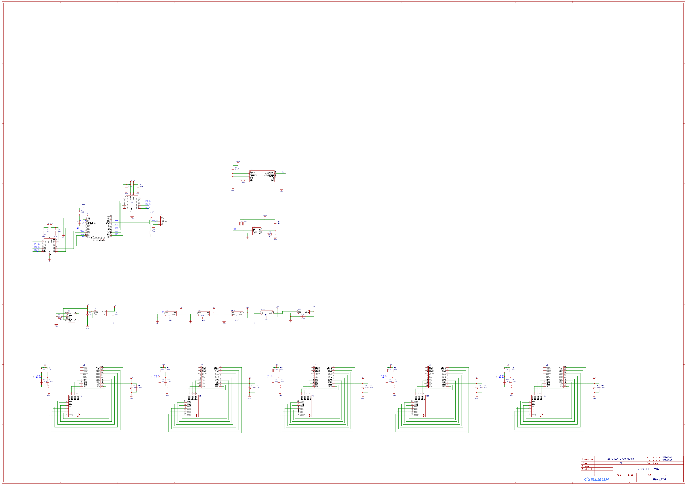
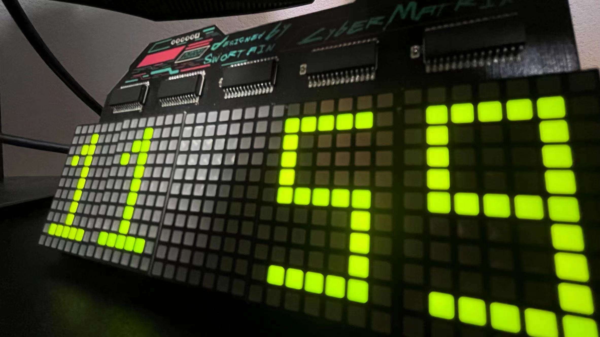
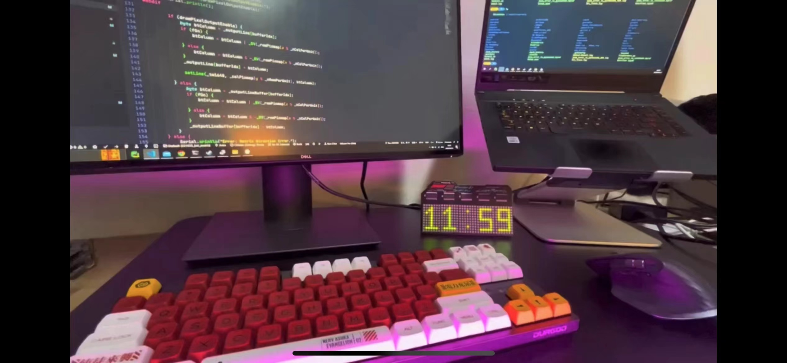

CyberMatrix|赛博阵列
CyberMatrix|赛博阵列是一个赛博朋克风格的桌面摆件，硬件采用嘉立创EDA设计，软件在platformIO上编写。代码开源在github上。
功能
用ESP32为控制器。驱动5个7x11的方形点阵，背部有5个WS2812作为背光。板载加速度计和温度传感器。
时间显示
5个点阵可以显示当前的小时和分钟。并且由于ESP32自带WiFi，所以可以连接到NTP服务器进行授时，省去了DS3231之类的实时时钟芯片。 不过这里有个字体的问题，因为为了能容易的实现print之类的方法，使用了Adafruit_GFX的库。这样可以把点阵当做一个屏幕来控制，但是因为像素非常的少，所以一定要精确控制字体中每个像素的亮灭。这样就需要自定义一个专用的字体。
点阵过渡效果
为了让点阵有过渡的效果，我写了一个库。实现了在两个画面切换时，随机找到需要改变的一个像素进行切换。并且在不同的像素间加入很小的延迟，实现效果类似以前那种反应比较慢的电子产品的效果。
背景灯光
背面有5个WS2812留在了PCB开孔和开槽的附近，当有反光的外壳背板时（暂时还没做）可以从背面透出灯光，实现一些待机和敲击唤醒的灯效。 这里为了呼吸灯效更自然一些，我用了电机控制里面常用的一个Sigmoid曲线。可以在启动和停止时更平滑一些。
温度和加速度传感器
因为觉得只有时间的显示有点单调，为了增加一些交互，我在板子上做了一个温度传感器和加速度计，用加速度计可以识别到附近是否有桌面的敲击，并且双击时切换屏幕显示内容为当前温度。
这里有个尴尬的地方是画PCB的时候我尽量的原理了ESP32和可能发热的器件，但是没想到和正面的TM1640距离过近了，导致现在测量的温度比环境温度高了一些。。。下次改版的时候再说吧
识别敲击的实现是在上电的时候连续采样求平均得到一个基准的XYZ，然后读取实时的XYZ，看和基准值的差别。差别大于阈值时认为有敲击，这里有个去抖的问题，用类似按键的去抖逻辑写了一个状态机来识别双击和去抖。效果大概就没问题了。
开源代码
代码可以在这里找到，如果喜欢的话可以STAR一下。
原理图

实拍图

